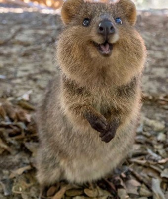

The Quokka lives in wetlands, coastal scrublans, and Dense vegitation in Western Austrailia, Rottnest Island, and Bald Island

Image from universe.roboflow.com
The Quokka is a small marsupial with round ears and a round-ish body.The mouth of the Quokka is shaped in a way that makes them look like they are smiling.